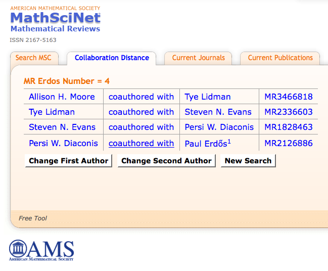
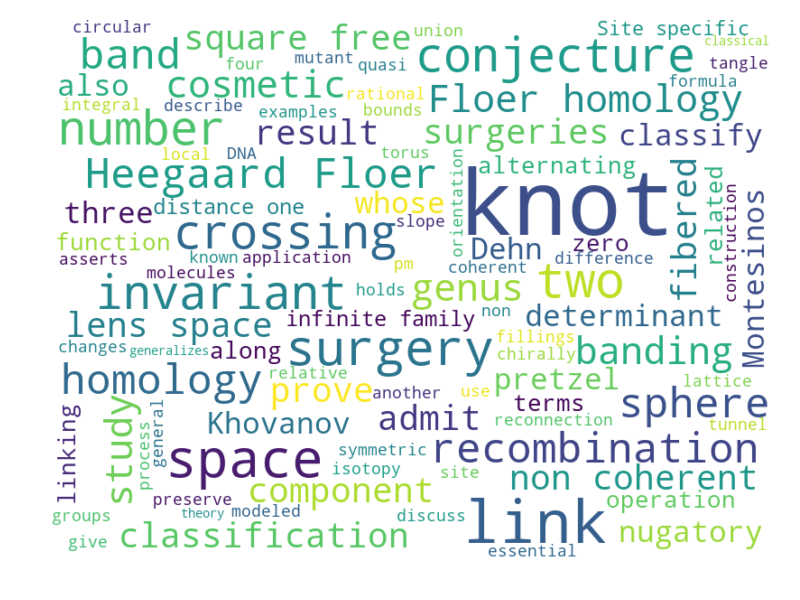

Fun Miscellany
1. My Erdos number is 4. Check yours here!

2. Through my advisor, Cameron Gordon, I can trace my mathematical lineage to Zeeman, Lefshetz, Jacobi, Copernicus, Regiomontanus, Gemistus Pletho, Nasir al-Din al-Tusi, and Sharaf al-Din al-Tusi (c. 1135~!) to name a few.
You can check your own mathematical lineage here.
3. This arXiv word cloud does a pretty good job of summarizing some of my interests.
